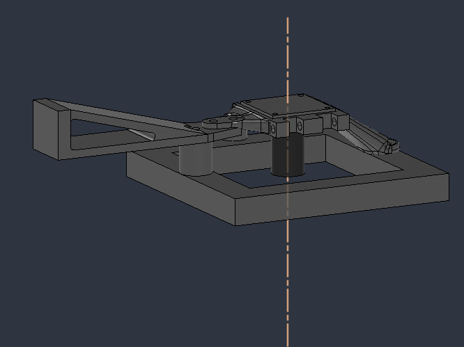
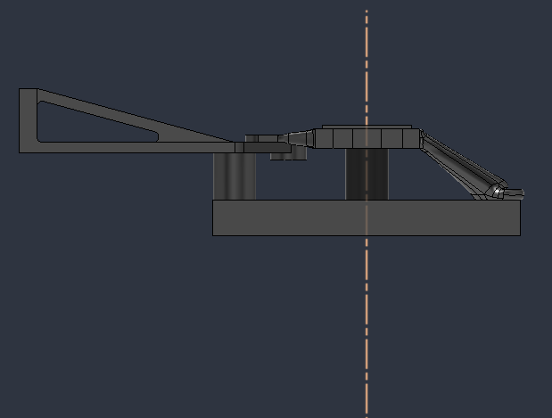
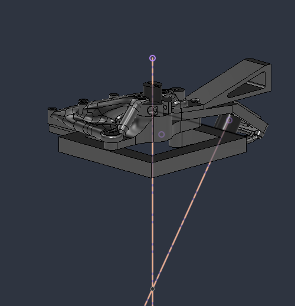
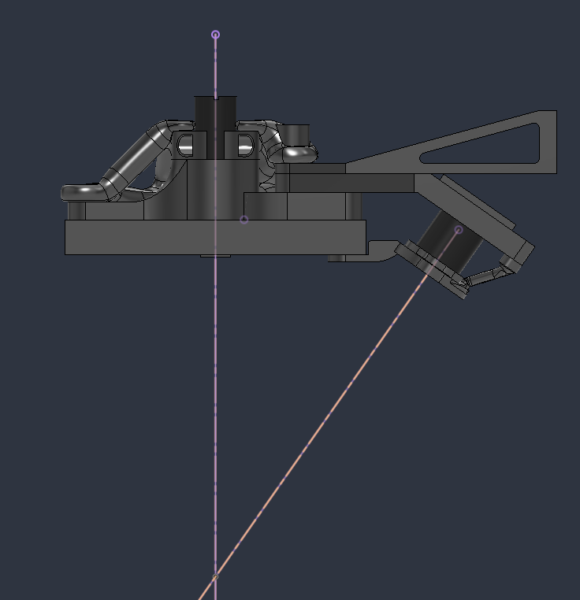

Focus measurements
A fixed-focus camera takes images at measured Z positions. Coarse and fine sweeps search for distinct focus peaks; missing or ambiguous readings remain unmeasured.
Repurposing a FlashForge Creator Pro into an optical scanning platform for measuring the visible surfaces of small parts.

The project converts the printer's X, Y and Z movement system into a camera positioning stage. Instead of relying on one image, the current approach uses focus variation: the lens is held at fixed manual focus while the stage moves through different Z positions. A sharpness score identifies the best focus plane at each measured XY location, producing a height map of the visible surface.
The mounting design centres a telephoto camera where the print head was, with an additional wide-field camera intended for broader coverage. Custom Python software coordinates image acquisition and processing with Klipper/Moonraker motion control.
The original optical concept used laser triangulation. That design is retained below as part of the development history, but the latest documented scanning method is based on camera focus.
The newest mounting geometry, viewed from two directions. These are CAD representations, not photographs of a completed installation.

Earlier geometry explored a more elaborate laser-and-camera arrangement and an angled optical axis. The contrast shows how the mount developed alongside the change in measurement method.


The scanning code handles image measurement, motion boundaries and reconstruction rather than simply displaying a camera feed.
A fixed-focus camera takes images at measured Z positions. Coarse and fine sweeps search for distinct focus peaks; missing or ambiguous readings remain unmeasured.
The Python workflow uses controller-reported XYZ homing and travel limits, then checks planned moves and object clearance while framing and scanning.
XY positions and their measured focus heights form a visible-surface map. A stepped-outline mode can sample extra points around height boundaries where justified.